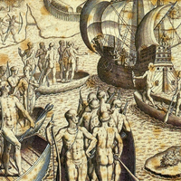
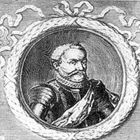
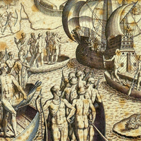
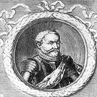

A França Antártica representou uma colônia francesa no período do Brasil Colonial durante 1555 a 1560, no local que atualmente corresponde à cidade do Rio de janeiro.
Com a expansão comercial marítimo europeia dos séculos XV e XVI, alguns acordos foram feitos para que as terras conquistadas por portugueses e espanhóis (Península Ibérica), ficassem protegidas das invasões.
Um exemplo notório, foi o Tratado de Tordesilhas, firmado em 1494, uma vez que Cristóvão Colombo, enviado pela Corte Espanhola, já havia chegado à América em 1492; e os portugueses, pioneiros na expansão marítimo europeia, chegariam 8 anos depois, empenhados em conquistar e explorar os territórios encontrados.
Não obstante, outros países europeus ficaram insatisfeitos por não estarem inclusos nos tratados e divisão de terras (Tordesilhas e Bula Inter-coetera) e resolveram participar da expansão a fim de conquistar territórios além-mar.
No Brasil, além de sofrerem hostilidade dos índios, os portugueses entraram em confronto com holandeses e franceses, os quais ocuparam o território entre os anos de 1555 e 1624.
Para muitos historiadores, os portugueses chegaram as terras brasileiras, por “um acaso” posto que estavam a caminho das Índias.
Um fato curioso é que as culturas que aqui habitavam antes da chegada dos portugueses foram denominadas de “índios”, decorrente do erro que cometeram.
Por outro lado, há historiadores que creem que os portugueses já haviam pisado em terras brasileiras e enviado informações para a colônia a respeito das terras, materiais e as pessoas que aqui estavam.
De qualquer forma, foi com Pedro Álvares Cabral, encarregado pelo rei D. Manuel I de Portugal, e sua esquadra composta por 13 naus, com mais de mil homens, o marco inicial de exploração e conquista das terras brasileiras.
Junto à ele estava o escrivão Pero Vaz de Caminha, encarregado de enviar informações para à Coroa sobre o local, as culturas, as pessoas, dentre outras informações.
Para tanto, Caminha escreveu uma carta, em 1° de maio de 1500, sendo o primeiro documento redigido no Brasil e, por esse motivo, é considerado o marco literário do país.
 


